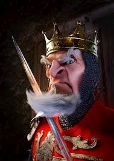

Duke Obediah von Wexford LXVII
A leader by birthright, Duke Wexford descends from an ancient noble lineage. He has trained to become a King his whole life and is ready to lead a growing new Royal nation. He is a cold, calculated man whose years of trials have made him a wise and patient leader who does not tolerate incompetence.
Royal Pedigree & Service
Trained alongside the royals of England, the Duke maintains global connections and an impeccable reputation. He bravely served his country during a tour to Fort Benning, Georgia, in 2001—a mission he personally funded for $32 (the cost of plane tickets and half a Snickers bar for entry).